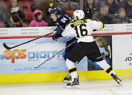

About me
Home page
My hockey career

I played the first 15 years of my life for the same team, SDE. Which is my hometown team.
Plenty of succesful hockey players have come out of that organization and its considered one of the better teams in Sweden.
When i first moved to the US I played for a prep team called selects academy at South Kent school.
Where I has the opportunity to play In many tournaments.
I had the opportunity to play in the USPHL all star game. I was also selected as the defenseman of the year in the league.
I later on Played with the Green Bay Gamblers of the USHL which is the top junior league in the United States. I was selected to play in the NHL/USHL Top prospects game.
Now I am playing divison 1 college hockey at Umaine.